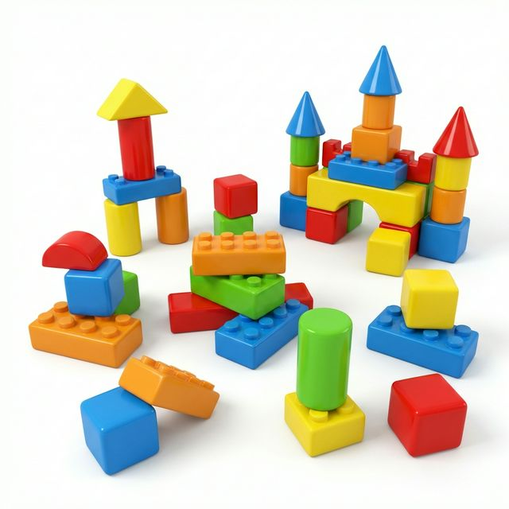

O universo infantil é repleto de descobertas diárias. É brincando que as crianças aprendem sobre a vida, desenvolvem suas emoções e aprimoram a coordenação motora. Nesse cenário, os brinquedos educativos entram não apenas como meras distrações, mas como verdadeiros aliados na evolução cognitiva das crianças.
Aprendizado e Diversão Caminham Juntos
Brinquedos didáticos, como blocos de montar, quebra-cabeças e lousas mágicas, estimulam regiões essenciais do cérebro infantil. Eles incentivam a resolução de problemas, o desenvolvimento lógico e a criatividade.
"É através da brincadeira que a criança se prepara para as complexidades da vida adulta, construindo sua autoconfiança e raciocínio estrutural."
Benefícios Reais para a Saúde Cognitiva
Na ToyKing, consideramos essencial oferecer uma ampla gama de brinquedos lúdicos e didáticos. Alguns dos principais benefícios incluem:
- Coordenação Motora Fina: O simples ato de encaixar peças melhora os movimentos precisos das mãos.
- Raciocínio Lógico: Entender proporções, pesos e equilíbrios através de blocos e jogos.
- Socialização: Jogos educativos muitas vezes exigem que as crianças brinquem em pares ou em grupos, estimulando a troca, o compartilhar e a empatia.

A Escolha Certa para Sua Loja
Lojistas que apostam em categorias didáticas percebem um aumento constante nas vendas corporativas e no ticket médio. Isso se deve à preocupação cada vez maior dos pais em investir no futuro intelectual de seus filhos. Garantir uma seção de "Didáticos" recheada com produtos ToyKing no seu ponto de venda é ter sucesso na prateleira.
Incorpore mais produtos interativos e construtivos e faça a alegria da criançada enquanto tranquiliza os pais!